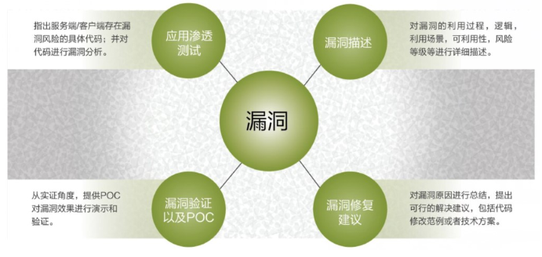

CSLG IT laboratory
移动应用渗透性测试
检验移动应用系统和业务逻辑的脆弱性和有效性
| 主要功能:
应用系统渗透评估 针对移动应用的身份认证、通信安全防护机制、日志安全、数据防篡改能力等方面，进行渗透评估。
业务安全渗透评估 针对用户信息资料、开户、登录、变更、交易、支付等业务方面，进行渗透评估。
POC 对渗透测试发现的风险及漏洞，提供可行解决方案，提供POC漏洞验证及修复效果演示。
| 技术特点:
安全移动应用渗透性测试，主要技术特点：（部分）
.身份认证机制检测
.通信会话安全机制检测
.敏感信息保护机制检测
.日志安全策略检测
.交易流程安全机制检测
.服务端鉴权机制检测.通信会话安全机制检测
.敏感信息保护机制检测
.日志安全策略检测
.交易流程安全机制检测
.访问控制机制检测
.数据防篡改能力检测
.防SQL注入能力检测
.防钓鱼安全能力检测
| 产品优势和价值:
拥有多年移动应用漏洞积累经验并且拥有专业资深的安全服务团队，能够为客户提供全方位的移动应用渗透性测试服务，并提供有效、可行的安全解决方案。主要优势和价值：
■ 顶尖资深安全服务团队
■ 自动化+人工双重测试保障，执行效率高，服务周期短
■ 测试过程规范、正规，符合金融级安全标准
■ 安全技术业界领先，保障修复后的安全效果
| 渗透测试标准（部分）:
• 北京洋浦伟业移动安全编码理论与实践• 《信息安全技术-信息系统安全等级保护级别要求-移动互联网要求标准》
• 《电子银行安全评估指引》
• 《银行业金融机构信息科技外包风险管理指引》
• 《网上银行信息系统通用安全规范》
• 《中国金融移动支付标准》
• SANS: CWE/SANS TOP 25 Most Dangerous Software Errors
• OWASP Mobile Security Project
cslgit©2016 Bootstrap 响应式网络安全服务 | 版权所有️